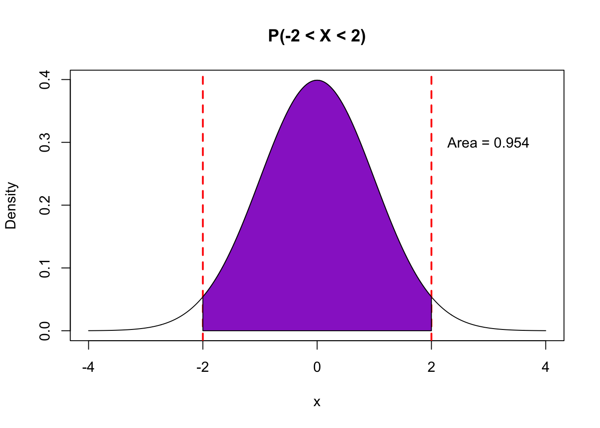
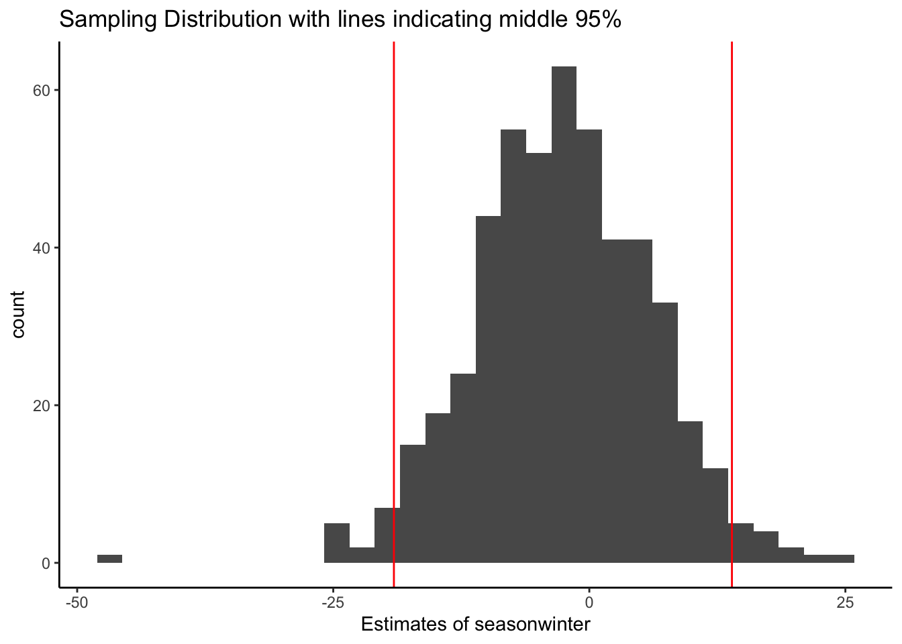
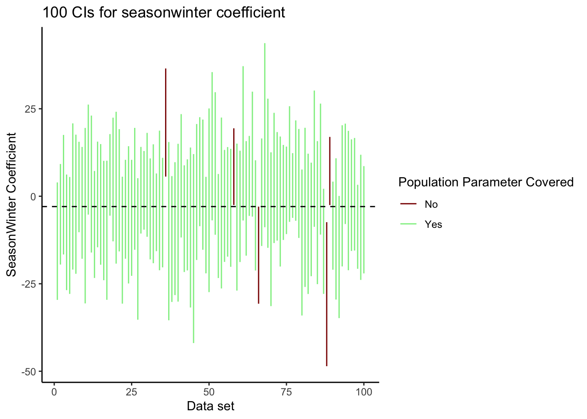
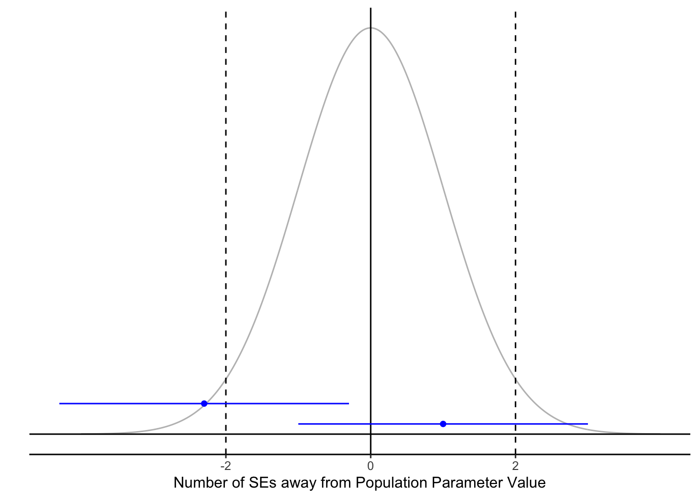

7.2 Confidence Intervals
A confidence interval (also known as an interval estimate) is an interval of plausible values of the unknown population parameter of interest based on randomly generated sample data. We construct these intervals in a way so that we can know how “good” of a guess the interval is of the true population parameter value. The interval computed from one sample may include or contain the true value of the parameter but it may not.
Above, we used the standard error (SE) to create an interval by going up 2 SE’s and going down SE’s from the estimate.
\[\text{Estimate }\pm 2*SE(\text{Estimate}) = (\text{Estimate} - 2*\text{SE}, \text{Estimate} + 2*\text{SE})\] ### Properties of Confidence Intervals
So, how “good” of a guess is this? If our sampling distribution is roughly Normal (unimodal, symmetric), then we know that the sample estimate in about 95% of the random samples should be within 2 standard deviations of the true population parameter.
## Plots area between x1 and x2 for the standard normal
## To plot tails, let x1 = -4 or x2 = 4
plot_area_std_normal <- function(x1, x2, title = "") {
x <- seq(-4, 4, 0.01)
y <- dnorm(x)
plot(x, y, type = "l", main = title, xlab = "x", ylab = "Density")
area <- pnorm(x2) - pnorm(x1)
bool <- x >= x1 & x <= x2
x_shaded <- x[bool]
y_shaded <- y[bool]
if (x1 == -4) {
area <- pnorm(x2)
x1 <- NULL
}
if (x2 == 4) {
area <- 1-pnorm(x1)
x2 <- NULL
}
abline(v = c(x1, x2), col = "red", lty = "dashed", lwd = 2)
polygon(x = c(x_shaded, tail(x_shaded, 1), head(x_shaded, 1)), y = c(y_shaded, 0, 0), col = "darkorchid")
text(x = 3, y = 0.3, paste("Area =", round(area, 3)))
}
plot_area_std_normal(-2, 2, title = "P(-2 < X < 2)")
You can either trust the mathematical theory or we can simulate the sampling distribution by drawing from our population because in this rare circumstance, we have access to all flights in the population.
sim_data <- mosaic::do(500)*(
flights %>%
sample_n(size = 100) %>% # Generate samples of 100 flights
with(lm(arr_delay ~ season)) # Fit linear model
)
lines <- sim_data %>%
summarize(lower = quantile(seasonwinter,0.025),upper = quantile(seasonwinter,0.975),)
sim_data %>%
ggplot(aes(x = seasonwinter)) +
geom_histogram() +
geom_vline(data = lines, aes(xintercept=lower), color='red') +
geom_vline(data = lines, aes(xintercept=upper), color='red') +
labs(x = 'Estimates of seasonwinter',title='Sampling Distribution with lines indicating middle 95%') +
theme_classic()
Based on the simulation of drawing from the population, we see that 95% of the samples have estimated slopes between -19.1 and 13.9. If we take the population values (center of this distribution) and add and subtract 2 standard deviations, then we get -20.1 and 14.2.
So if we take each 1000 simulated random samples from the population and create an interval estimate by adding and subtracting 2 standard errors (estimates of the standard deviation), we can check to see how often those intervals contain the true population value at the center of the distribution.
Let’s look at the confidence intervals for the first 100 random samples from the population. The dashed line indicates the true population value of the slope coefficient (yes, we are in the rare circumstance in which we have access to the true population). We’ve created one line for each interval and colored the according to whether or not the interval covers or contains the true population value. In the first 100 intervals, we see that 95% of the intervals contain the true population value and 5% do not. In the 500 random samples generated, close to 95% of them have intervals that contain the true population parameter. When we get one of these samples, we never know if we are one of the 95% or one of the 5%.

## Warning: `count_()` is deprecated as of dplyr 0.7.0.
## Please use `count()` instead.
## See vignette('programming') for more help
## This warning is displayed once every 8 hours.
## Call `lifecycle::last_warnings()` to see where this warning was generated.## # A tibble: 2 x 3
## SlopeCover n prop
## <chr> <int> <dbl>
## 1 No 24 0.048
## 2 Yes 476 0.952This makes sense given our interval construction process. If the estimate is within 2 standard errors of the true population parameter (between the dashed lines below), then the interval will contain the true population parameter. If the estimate is not within 2 standard errors of the true population parameter (outside the dashed lines below), then the interval will NOT contain the true population parameter.
dat <- data.frame(z = seq(-4,4,by=.01))
dat <- dat %>% mutate(f = dnorm(z))
dat2 <- data.frame(x = c(1,-2.3), y = c(0.01,0.03), x1 = c(1,-2.3) - 2, x2 =c(1,-2.3) + 2, y1 = c(0.01,0.03), y2= c(0.01,0.03))
dat %>%
ggplot(aes(x = z, y = f)) +
geom_line(color='grey') +
geom_hline(yintercept = 0) +
geom_vline(xintercept = c(-2,2,0),linetype = c('dashed','dashed','solid')) +
geom_point(data = dat2, aes(x = x, y=y),color = 'blue') +
geom_segment(data=dat2, aes(x =x1, xend = x2, y = y1, yend=y2),color = 'blue') +
labs(x = 'Number of SEs away from Population Parameter Value',y='') +
scale_x_continuous(breaks=c(-2,0,2)) +
theme_classic() +
theme(axis.line.y=element_blank(),
axis.text.y=element_blank(),
axis.ticks.y=element_blank())
7.2.1 Interval Construction Process
In the intervals we constructed above, we used 95% confidence intervals. That 95% is the confidence level of the interval estimate.
The confidence level represents the proportion of possible random samples and thus confidence intervals that contain the true value of the unknown population parameter. Typically, the confidence level is abstractly represented by \((1-\alpha)\) such that if \(\alpha = 0.05\), then the confidence level is 95% or 0.95.
What is \(\alpha\)? We will define \(\alpha\) when we get to hypothesis testing, but for now, we will describe \(\alpha\) as an error probability. We want the error probability to be low and we want the confidence level, \((1-\alpha)\), to be high.
We will now formally discuss two ways of creating confidence intervals. One was have already introduced, which is the classical approach, and the other approach uses bootstrapping.
7.2.1.1 Via Classical Theory
If we can use probability theory to approximate the sampling distribution, then we can create a confidence interval by taking taking our estimate and adding and subtracting a margin of error:
\[\text{Estimate }\pm \text{ Margin of Error}\]
The margin of error is typically constructed using z-scores from the sampling distribution (such as \(z^* = 2\) that corresponds to a 95% confidence interval or \(\alpha = 0.05\)) and an estimate of the standard deviation of the estimate, called a standard error.
Once we have an estimate of the standard deviation (through a formula or R output) and an approximate sampling distribution, we can create the interval estimate:
\[\text{Estimate }\pm z^* *SE(\text{Estimate})\] With linear and logistic regression models, we can have R create the confidence intervals for the slope coefficients.
## 2.5 % 97.5 %
## (Intercept) -2.967923 16.35568
## seasonwinter -14.183889 12.87457## 0.5 % 99.5 %
## (Intercept) -6.095894 19.48365
## seasonwinter -18.563924 17.25460## 5 % 95 %
## (Intercept) -1.390868 14.77862
## seasonwinter -11.975571 10.66625See code below to find the \(z^*\) values for other confidence levels beyond 95% to create the intervals manually.
## [1] 1.959964## [1] 2.575829## [1] 1.644854The fact that confidence intervals can be created as above is rooted in probability theory. If you would like to see how the form above is derived, see the Math Box below.
(Optional) Deriving confidence intervals from theory
We know that for a regression coefficient, the sampling distribution of regression coefficient estimates are approximately Normal and thus the standardized version is approximately Normal with mean 0 and standard deviation 1.
\[\frac{\hat{\beta} - \beta}{SE(\hat{\beta})} \sim \text{Normal}(0,1)\]
From there we can write a probability statement using the 68-95-99.7 rule of the normal distribution and rearrange the expression using algebra:
\[P(-2\leq\frac{\hat{\beta} - \beta}{SE(\hat{\beta})}\leq2) = 0.95\]
\[P(-2 *SE(\hat{\beta})\leq\hat{\beta} - \beta \leq2 *SE(\hat{\beta}) ) = 0.95\]
\[P(-2* SE(\hat{\beta})-\hat{\beta} \leq -\beta \leq2 *SE(\hat{\beta})-\hat{\beta} ) = 0.95\]
\[P(2 *SE(\hat{\beta})+\hat{\beta} \geq \beta \geq -2* SE(\hat{\beta})+\hat{\beta} ) = 0.95\]
\[P(\hat{\beta}-2 *SE(\hat{\beta}) \leq \beta \leq\hat{\beta}+2 *SE(\hat{\beta}) ) = 0.95\]
You’ve seen the Student T distribution introduced in the previous chapter. We used the Normal distribution in this derivation, but it turns out that the Student t distribution is more accurate for linear regression coefficients (especially if sample size is small). The normal distribution is appropriate for logistic regression coefficients.
7.2.1.2 Via Bootstrapping
In order to quantify the sampling variability, we can treat our sample as our “fake population” and generate repeated samples from this “population” using the technique of bootstrapping.
Once we have a distribution of sample statistics based on the generated data sets, we’ll create a confidence interval by finding the \(\alpha/2\)th percentile and the \((1-\alpha/2)\)th percentile for our lower and upper bounds. For example, for a 95% bootstrap confidence interval, \(\alpha = 0.05\) and you would find the values that are the 2.5th and 97.5th percentiles.
Let’s return to the example of predicting arrival delays as a function of season. We bootstrapped the data already, but here is the code we used.
boot_data <- mosaic::do(1000)*(
flights_samp %>% # Start with the SAMPLE (not the FULL POPULATION)
sample_frac(replace = TRUE) %>% # Generate by resampling with replacement
with(lm(arr_delay ~ season)) # Fit linear model
)Rather than using the classical approach to create confidence intervals, we can find the middle \((1-\alpha)\)*100% (if \(\alpha = 0.05\), 95%) of the bootstrap sampling distribution to give us lower and upper bounds for our interval estimate.
# Bootstrap Confidence Interval
boot_data %>%
summarize(
lb = quantile(seasonwinter, 0.025),
ub = quantile(seasonwinter, 0.975))## lb ub
## 1 -13.99145 12.32934This interval construction process has the same general properties that the classical approach and the same interpretation, which we’ll talk about next.
7.2.1.3 Probability Theory vs. Bootstrapping
In the modern age, computing power allows us to perform bootstrapping easily to create confidence intervals. Before computing was as powerful as it is today, scientists needed mathematical theory to provide simple formulas for confidence intervals.
If certain assumptions hold, the mathematical theory proves to be just as accurate and less computationally-intensive than bootstrapping. Many scientists using statistics right now learned the theory because when they learned statistics, computers were not powerful enough to handle techniques such as bootstrapping.
Why do we teach both the mathematical theory and bootstrapping? You will encounter both types of techniques in your fields, and you’ll need to have an understanding of what these techniques are to bridge the gap until statistical inference uses modern computational techniques more widely.
7.2.2 Confidence Interval Interpretation
So how should we talk about these intervals the we create?
In general, this is what we know about confidence intervals:
- The estimated interval provides plausible values for true population parameter based on our sample data.
- Assuming the sampling distribution model is accurate, we are 95% confident that our confidence interval of (lower value, upper value) contains the true population parameter.
- We are confident in the interval construction process because we expect 95% of samples to lead to intervals that contain the true population parameter value. We just don’t know if our particular interval from our sample contains that true population parameter value or not.
- It is useful to notice whether a slope of 0 or odds ratio of 1 is a plausible value because these values indicate no differences.
Most importantly, we should incorporate the data context and describe the population parameter we are trying to learn about. For example, let’s interpret the bootstrap confidence interval of (-13.9, 12.3) from above; notice how we rounded the lower and upper values so as to not overstate our certainty.
- Based on a sample of 100 flights from NYC, we estimate that the true mean arrival delays are between 13.9 minutes shorter and 12.3 minutes longer in winter as compared to summer months in NYC. [Notice the data context]
- We created this interval estimate such that we’d expect that 95% of the time, we’d capture the true difference in seasons but we cannot know for sure for this interval. [Notice how we’ve written out the population parameter in context]
- Additionally, this interval is quite wide (and containing 0) highlighting our uncertainty and direction of the relationship between season and delay times. [Notice how we are acknowledging the uncertainty in our conclusions]
7.2.3 More Examples
We’ll discuss a few more examples of models and confidence intervals based on those models.
7.2.3.1 Linear Regression Model
Using the flight data, how well can the departure delay predict the arrival delay? What is the effect of departing 1 more minute later? Does that correspond to 1 minute later in arrival on average? Let’s look at the estimated slope between departure and arrival delays for the sample of 100 flights from NYC.
## # A tibble: 2 x 5
## term estimate std.error statistic p.value
## <chr> <dbl> <dbl> <dbl> <dbl>
## 1 (Intercept) -2.59 1.86 -1.39 1.66e- 1
## 2 dep_delay 1.00 0.0617 16.3 1.35e-29The classical 95% CI for the slope is given with by
## 2.5 % 97.5 %
## (Intercept) -6.2690537 1.094198
## dep_delay 0.8816967 1.126705or with bootstrapping,
boot_data <- mosaic::do(1000)*(
flights_samp %>% # Start with the SAMPLE (not the FULL POPULATION)
sample_frac(replace = TRUE) %>% # Generate by resampling with replacement
with(lm(arr_delay ~ dep_delay)) # Fit linear model
)
boot_data %>%
summarize(
lower = quantile(dep_delay, 0.025),
upper = quantile(dep_delay, 0.975))## lower upper
## 1 0.9259392 1.189972Interpretation: If the flight’s departure is delayed an additional minute, then I’m 95% confident that we’d expect the arrival delay to be increased by 0.88 to 1.12 minutes, on average. This makes sense in this context since leaving a minute later on average leads to arriving a minute later give or take tenths of a second.
7.2.3.2 Logistic Regression Model
Are the same proportion of afternoon flights in the winter and the summer? Let’s fit a logistic regression model and see what our sample of 100 flights indicates.
flights_samp <- flights_samp %>%
mutate(afternoon = flights_samp$day_hour == 'afternoon')
glm.afternoon <- flights_samp %>%
with(glm(afternoon ~ season, family = 'binomial'))
glm.afternoon %>%
tidy()## # A tibble: 2 x 5
## term estimate std.error statistic p.value
## <chr> <dbl> <dbl> <dbl> <dbl>
## 1 (Intercept) -0.123 0.286 -0.428 0.668
## 2 seasonwinter 0.479 0.404 1.19 0.235The output for the model gives standard errors for the slopes, so we can create the classical confidence intervals for the slopes first,
## 2.5 % 97.5 %
## (Intercept) -0.6905940 0.4389059
## seasonwinter -0.3081988 1.2791414Or with bootstrapping,
#confidence interval for the slope
boot_data <- mosaic::do(1000)*(
flights_samp %>% # Start with the SAMPLE (not the FULL POPULATION)
sample_frac(replace = TRUE) %>% # Generate by resampling with replacement
with(glm(afternoon ~ season, family = 'binomial')) # Fit model
)
boot_data %>%
summarize(
lower = quantile(seasonwinter, 0.025),
upper = quantile(seasonwinter, 0.975))## lower upper
## 1 -0.2719337 1.23918For logistic regression, we exponentiate the slopes to get an more interpretable value, the odds ratio. The tricky thing is that we need to exponentiate after we create the confidence interval for the slope, rather than before.
Here, we are comparing the odds of having a flight in the afternoon between winter months (numerator) and summer months (denominator). Is 1 in the interval? If so, what does that tell you?
## 2.5 % 97.5 %
## (Intercept) 0.5012782 1.551009
## seasonwinter 0.7347692 3.593553boot_data %>%
summarize(
lower = quantile(seasonwinter, 0.025),
upper = quantile(seasonwinter, 0.975)) %>%
exp()## lower upper
## 1 0.7619048 3.452783Interpretation: Flights from NYC in the winter have about the same odds of being an afternoon flight as compared to the summer time. I’m 95% confident that the odds of a flight being in the afternoon is between 0.7 and 1.5 times the odds in the summer. We conclude that we don’t have any evidence there any more afternoon flights in the winter versus the summer leaving from NYC.
7.2.3.3 Confidence Intervals for Prediction
Imagine we are on a plane, we left 15 minutes late, how late will arrive? We’ve already looked at the slope measuring the relationship, but what about predicting the arrival delay? Since we only have a sample of 100 flights, we are a bit unsure of our prediction.
A classical CI can give us an interval estimate of what the prediction should be (if we had data on all flights).
## fit lwr upr
## 1 12.47558 8.881202 16.06996This is taking into account how uncertain we are about our model prediction because our model is based on sample data rather than population data.
Interpretation: I’m 95% confident that flights from NYC that left 15 minutes late will arrive on average between 8.9 and 16 minutes. It is interesting that we estimate the average arrival delay for a flight that left 15 minutes late to be as low as 8.9 minutes suggesting that maybe flights can typically make up time in the air. We could investigate this by studying the differences in arrival and departure delays.
7.2.3.4 Prediction Intervals
We also know that every flight is different (different length, different weather conditions, etc), so the true arrival delay won’t be exactly what we predict.
So to get a better prediction for our arrival delay, we can account for the size of errors or residuals by creating a prediction interval. This interval will be much wider than the confidence interval because it takes into account how far the true values are from the prediction line.
## fit lwr upr
## 1 12.47558 -22.86868 47.81985You’ll notice that the prediction interval is wider than the confidence intervals. In fact, the prediction interval incorporates information about the standard deviation of residuals to account for the average size of prediction error. To learn more, take Mathematical Statistics.
Interpretation: I predict that 95% of flights from NYC that leave 15 minutes late will arrive on average between 23 minutes early and 48 minutes late. This is a huge range which suggests that the departure delay is only one factor in determine when a flight arrives at its destination.